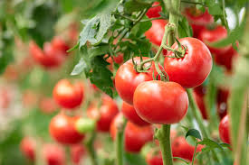

Tomatoes are a widely consumed fruit, botanically classified as a berry and belonging to the Solanaceae family. Native to western South America, tomatoes are now cultivated all over the world. They come in various shapes, sizes, and colors and are rich in vitamins C, K, and antioxidants like lycopene.
Tomatoes grow best in warm seasons because they need temperatures between 20°C and 30°C. Warm weather promotes better flowering, fruit development, and sweetness. Cold temperatures and frost can damage the plants, which is why tomatoes are grown in summer or moderate climates.
Tomatoes provide high nutritional value, strong market demand, and good profit for farmers. They grow quickly, give high yield, and are easy to cultivate both commercially and at home.
| Factor | Requirement |
|---|---|
| Best Season | Summer / Warm Climate |
| Soil Type | Well-drained loamy soil |
| Temperature | 20°C – 30°C |
| Water Requirement | Moderate, regular watering |
| Sunlight | 6–8 hours daily |
| Yield Time | 60–90 days |